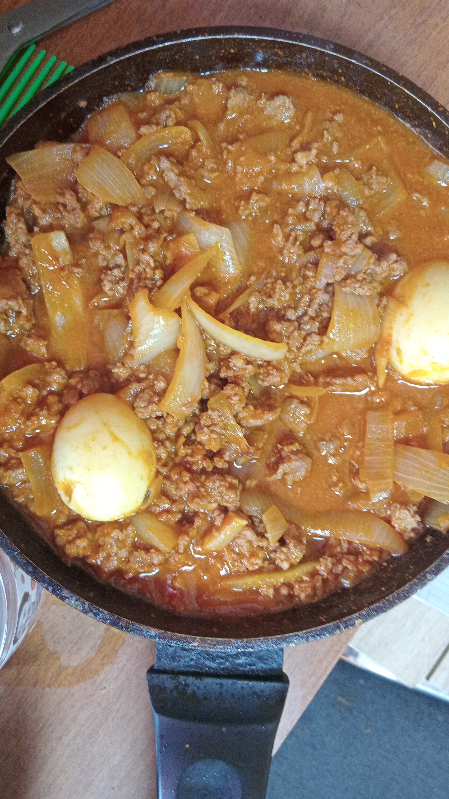

Odins recipes
How to make beef sauce
Ingredients
- A pack of ground beef
- Two fresh tomatoes
- An onion
- A sachet of tomato paste
- Pepper,MSG seasoning,curry and anyother choice spices
Steps
- Marinate your ground beef with the spices and let it sit.
- Heat up your pan and sizzle some onions on it.
- Mix your tomato paste with a little water and add it to the pan to fry with the onions.
- Add some spices to the pan
- Take the tomato paste and onions mix out of the pan and set aside.
- Stir fry your ground beef.
- When your grounf beef is cooked,you can combine with your tomato and onions mix
- Let it cook in the pan for a little bit,and you have beef sauce.
